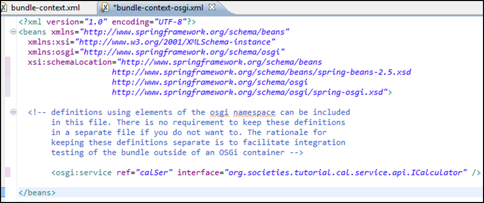
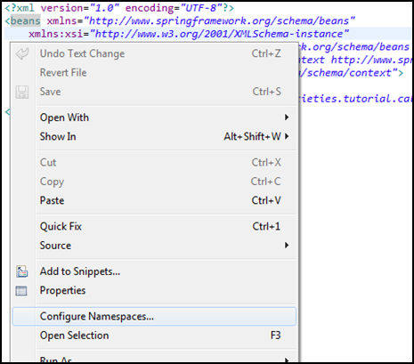
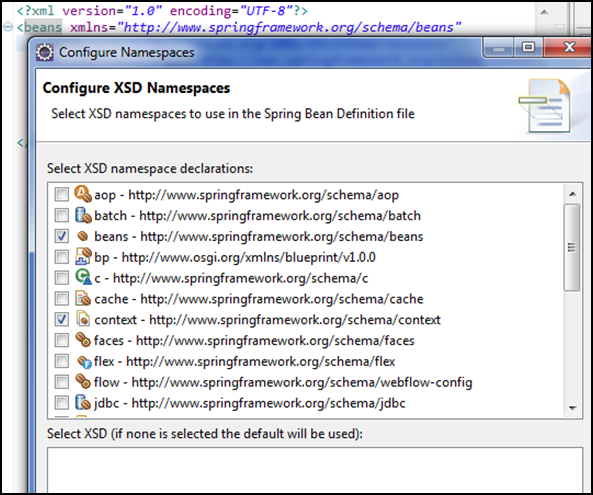

Spring Configuration for Registering a Bean as an OSGI Service
Edit bundle-context-osgi.xml as per figure below.

Note: to add any new namespace into this spring config file - right click on this page as shown in figure below, then select "Configure Namespaces...".

The window in figure below will appear, from which you can select the Spring namespaces you are interested in including in your Context Configuration:

Once configured, build the project using mvn install and, if you already have the VIRGO_HOME environment variable set, your jar will be automatically copied to the VIRGO_HOME/pickup/ directory, ready for execution.